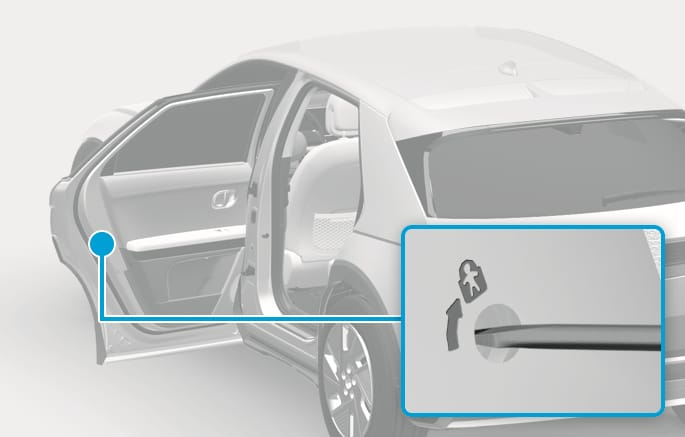

어린이 보호용 잠금 장치 사용하기
차량에 어린이가 탑승한 경우 어린이 보호용 잠금 장치를 이용해 도어를 잠그십시오. 어린이가 주행 중 도어를 여는 경우 심각한 부상을 입거나 사망할 수 있습니다.
탑승한 어린이가 주행 중 뒷좌석 도어를 여는 것을 방지할 수 있습니다.

2C_ChildProtectRearDoorLockManual
-
뒷도어를 여십시오.
-
길고 납작한 물체를 사용하여 도어 안쪽의 잠금 스위치를 오른쪽으로 돌리십시오.
-
뒷도어를 닫으십시오.
-
이후 뒷도어를 열 때는 차량 외부 도어 핸들을 이용하십시오.
-
어린이 보호용 잠금 장치를 잠금 해제하기 전에는 도어의 잠금 상태와 관계없이 뒷도어 내부의 도어 핸들로 도어를 열 수 없습니다.
-